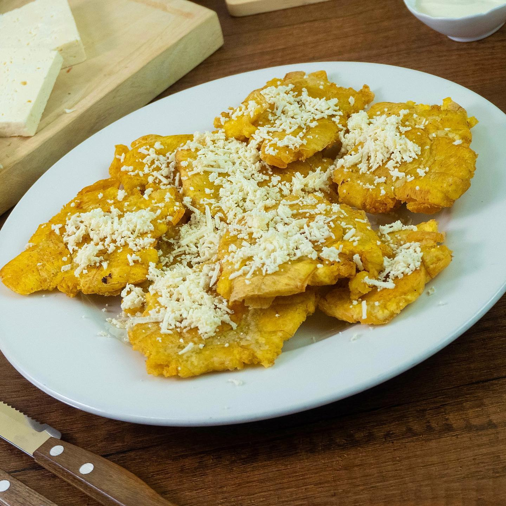

Patacones con Queso

A very popular dish in the Colombian's Coast Gastronomy.
Ingredients
- Green plantain
- Oil
- Grated cheese
- Salt
Steps
- Peel the plantain and cut it into slices approximately 5 cm in diameter.
- Fry the slices for the first time in very hot oil for approximately 2 minutes, stirring constantly and turning the slices.
- Remove them from the oil and flatten them using a pataconera. If you don't have one, you can do this using a flat plate.
- Once flattened, until very thin, fry them again for another 2 minutes or until golden brown.
When they are ready, remove them and add salt to taste.
- Grate the cheese to taste and place it on top of the patacones.